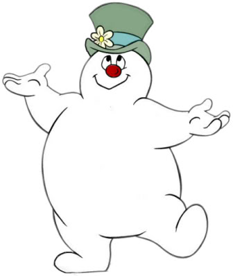
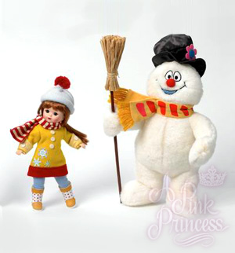
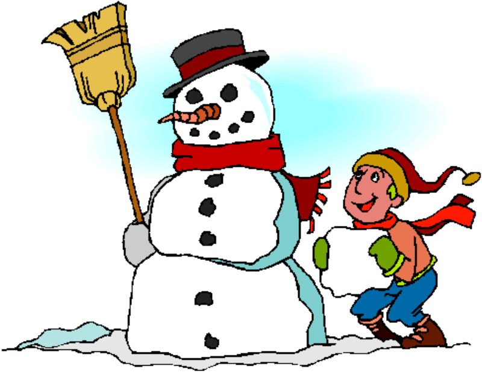
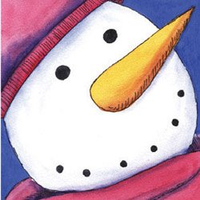
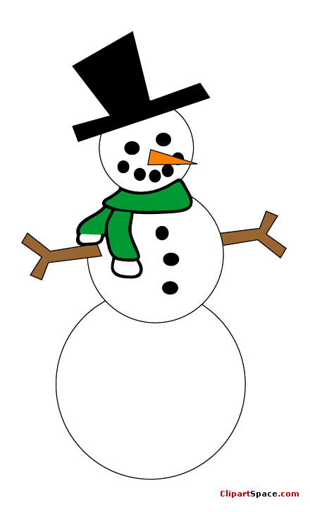
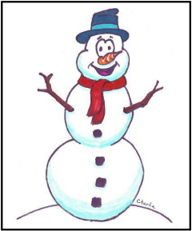
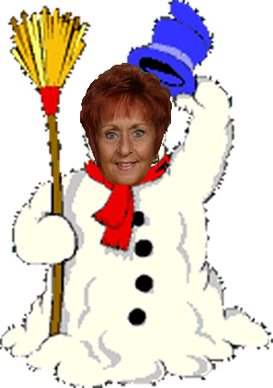

Frosty The Snow ManFrosty the Snow Man came to town one bright, cold winter's day. The first real snow of the winter had fallen the night before.In the morning, out came the children, and they started to roll snowballs. Round and round the snowy yard they rolled the snowballs. Soon they had two fine big ones. Round and round the yard again-there was a little snowball just the right size for a snow man's head. Billy ran home and brought two bits of coal to use for the snow man's eyes. Sally have him a button nose and a funny corncob pipe. Tommy brought floppy galoshes and a scarf for the snow man. And Joe brought him a pair of old red mittens to wear. "Now we need a hat ," said Sally and Joe. So they all began to look around. Sally found an old cap. But it didn't look just right. Billy found a battered felt hat. But it still didn't seem right. Just then, down the street came the whistling wind. And it blew to their feet a shiny top hat. "Just what we need!" cried Sally and Joe. "It's like magic!" said Billy and Tommy. It was Tommy who picked up the shiny top hat and put it on the snow man's head. Zing! Tommy's hand sprang back with a shock. "It's magic" gasped Tommy. "So it is," said a voice, a deep, chuckly voice they had never heard before. "And a pleasant sort of magic, if I do say so myself." "It's the snow man!" whispered Sally. And so it was. "Frosty the Snow Man, at your service," said he. That's how Frosty the Snow Man came alive. If you have never had a snow man for a friend, you can scarcely imagine all the fun those children had. For Frosty took them coasting-and never had their sleds slid so swiftly and far. Frosty helped them build a snow house- and never had blocks packed so firmly and well. They all went ice skating- and the magical part was that while they were with Frosty, then children could stay out and play in the snow and never get shivery cold. Was it Frosty's warm heart, or his magical smile? Whatever it was, they thought it was fine. Each morning when the children came out to play, Frosty had a wonderful plan all set. One morning he said, "Let's go shopping today. I've never seen a store, you know." So they all joined hands and away they skipped, off towards town where the shops stood in rows. It was fun showing Frosty around! For he thought every window was wonderful. All around the town they led Frosty that day, while the warm wintry sun shone down. Soon they came to a corner and around the corner came a warm, gusty wind. Off went Frosty's hat. And away went Frosty after it. Then Tweet! sang the traffic cop's loud whistle. And the children could not follow Frosty, because traffic streamed by--buses and trucks and family cars. Tweet! went the traffic cop's whistle again. The crossing stood empty before them now, but there was not a sign of Frosty to be seen. Only down the street his top hat rolled, all by itself in the melting snow. "Mr. Policeman!" the children cried. "Where has Frosty the Snow Man gone?" "Oh," said the policeman. "Frosty the Snow Man has gone away Where all snow men go on a sunny day. But he'll be back at your bidding and call Whenever great heaps of snowflakes fall." And he will. THE END Frosty The SnowmanFrosty the snowman was a jolly happy soul With a corncob pipe and a button nose and two eyes made out of coal. Frosty the snowman is a fairy tale they say He was made of snow but the children know how he came to life one day. There must have been some magic in that old silk hat they found For when they placed it on his head he began to dance around. O Frosty the snowman was alive as he could be And the children say he could laugh and play just the same as you and me. Thumpetty thump thump thumpety thump thump Look at Frosty go Thumpetty thump thump thumpety thump thump Over the hills of snow Frosty the snowman knew the sun was hot that day So he said "Let's run and we'll have some fun now before I melt away." Down to the village with a broomstick in his hand Running here and there all around the square saying Catch me if you can. He led them down the streets of town right to the traffic cop And he only paused a moment when he heard him holler "Stop!" For Frosty the snow man had to hurry on his way. But he waved goodbye saying "Don't you cry I'll be back again some day. "Thumpetty thump thump thumpety thump thump Look at Frosty go Thumpetty thump thump thumpety thump thump Over the hills of snow |
 | ||||
|  | |||||
|  | |||||
| < | |||||
|  | |||||
|  | |||||
|  | |||||
|
FROSTY THE SNOWMAN
|
|||||